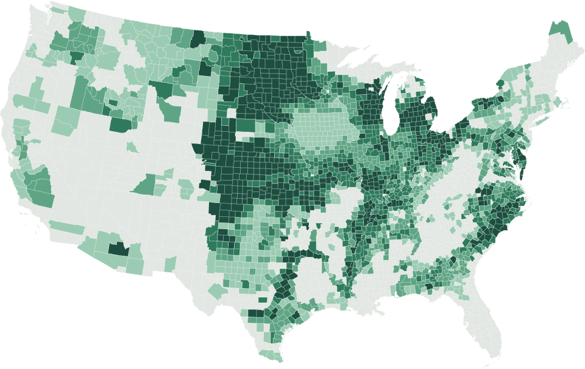

How we hold forecasts to account.
We don't have facility quality forecasts yet. These are tests of the method behind them on public data, published the way we will publish quality results: every season predicted from earlier seasons only, losing years included.
First quality test: mycotoxin losses in every US county.
Crop insurance pays out when mycotoxin losses are large enough to claim, and USDA publishes claims by county and cause of loss. We asked whether weather around flowering could tell which counties would file one, better than each county's own history, predicting every year from earlier years only.
It ranks the risk better, in both crops. It does not yet call how bad a bad year will be.
- Corn, years weather beat county history
- 16 of 21
- Wheat, years weather beat county history
- 16 of 21
- Corn, ranking accuracy (AUC): county history to weather
- 0.69 → 0.77
- Wheat, ranking accuracy (AUC): county history to weather
- 0.65 → 0.78

- Fewer to more seasons tested
- Not tested
Insurance-claim backtest, 2005 to 2025. It sees losses big enough to be paid, not lab values.
Corn mycotoxin claims 16 of 21 years
Wheat mycotoxin claims 16 of 21 years
Most wins are small. Overall, forecast error fell 2.1% for corn and 2.0% for wheat, and neither result is certain: the 95% ranges run from −0.9% to +6.0% and from −3.9% to +6.3%.
Corn: counties with a claim
Wheat: counties with a claim
Show the mycotoxin numbers as a table
| Year | Corn: error change | Corn: counties with a claim | Corn: model | Corn: county history | Wheat: error change | Wheat: counties with a claim | Wheat: model | Wheat: county history |
|---|---|---|---|---|---|---|---|---|
| 2005 | +1.9% | 5.6% | 2.7% | 2.1% | +0.0% | 1.8% | 0.4% | 0.6% |
| 2006 | +3.2% | 3.9% | 3.9% | 2.8% | +0.1% | 0.8% | 0.7% | 0.9% |
| 2007 | +0.8% | 2.2% | 1.8% | 3.0% | +1.1% | 0.3% | 0.7% | 0.9% |
| 2008 | +23.6% | 6.0% | 3.9% | 3.0% | +0.8% | 2.0% | 0.9% | 0.8% |
| 2009 | +1.0% | 12.9% | 3.7% | 3.7% | +2.9% | 6.2% | 1.4% | 1.0% |
| 2010 | +5.4% | 6.0% | 5.8% | 5.4% | −0.6% | 5.7% | 4.2% | 2.0% |
| 2011 | +0.8% | 6.5% | 7.1% | 5.8% | +0.2% | 4.8% | 2.2% | 2.8% |
| 2012 | +0.2% | 15.6% | 5.9% | 6.1% | +9.8% | 1.1% | 1.2% | 3.6% |
| 2013 | +0.8% | 2.4% | 3.6% | 7.9% | +1.5% | 4.9% | 3.7% | 3.1% |
| 2014 | +24.8% | 0.7% | 3.4% | 7.1% | +2.0% | 14.0% | 3.9% | 3.7% |
| 2015 | +23.8% | 0.8% | 3.3% | 6.4% | +10.5% | 20.7% | 9.7% | 6.1% |
| 2016 | −10.1% | 6.3% | 5.9% | 5.7% | −9.2% | 2.6% | 10.3% | 10.5% |
| 2017 | +8.2% | 5.0% | 2.7% | 5.9% | +25.2% | 0.2% | 5.8% | 8.9% |
| 2018 | +0.1% | 5.6% | 4.8% | 6.0% | −26.9% | 4.2% | 9.6% | 7.8% |
| 2019 | −7.3% | 1.8% | 3.9% | 5.9% | −3.3% | 9.2% | 12.0% | 7.4% |
| 2020 | +1.2% | 4.0% | 3.6% | 5.6% | +9.7% | 0.8% | 6.0% | 8.1% |
| 2021 | +32.6% | 0.5% | 2.6% | 5.5% | +3.3% | 1.1% | 5.3% | 7.0% |
| 2022 | −2.9% | 5.4% | 6.8% | 5.2% | +24.8% | 0.5% | 4.2% | 6.5% |
| 2023 | −5.4% | 4.4% | 3.9% | 5.2% | +45.0% | 0.3% | 2.7% | 5.9% |
| 2024 | −18.8% | 0.9% | 3.9% | 5.2% | +3.3% | 8.6% | 7.3% | 5.6% |
| 2025 | +4.1% | 1.3% | 3.0% | 4.8% | −20.1% | 3.7% | 9.2% | 5.9% |
| All years | +2.1% | 35,930 county-years | +2.0% | 31,195 county-years | ||||
Earlier test: crop yield in four states.
Before the quality test, we tested the method on corn and soybean yield in Kentucky, Indiana, Ohio and Tennessee.
On soybean yield, 16.4% lower error than trend across 13 held-out years. On corn, an early result didn't survive re-testing, so we withdrew it.
Yield backtest, 2013 to 2025. Not a quality forecast.
Soybean yield Holds up
Corn yield Withdrawn
Show the yield numbers as a table
| Year | Soybean yield | Corn yield |
|---|---|---|
| 2013 | +49.4% | +61.0% |
| 2014 | +34.6% | +56.0% |
| 2015 | +6.9% | −16.9% |
| 2016 | +7.5% | +12.2% |
| 2017 | +13.5% | −24.1% |
| 2018 | −2.5% | +35.1% |
| 2019 | −2.4% | −0.8% |
| 2020 | +1.6% | −35.0% |
| 2021 | −7.2% | +21.8% |
| 2022 | +1.5% | +36.6% |
| 2023 | −19.2% | −39.2% |
| 2024 | +27.5% | +19.2% |
| 2025 | +29.4% | −5.4% |
| All years | +16.4% | +15.2% (withdrawn) |
What public data can't show.
These tests go about as far as public data allows. The rest needs facility records.
- Toxin levels
- No national public record gives DON, aflatoxin or fumonisin levels by county. The test above uses insurance claims, which only see losses big enough to be paid, not the lower levels that drive price discounts.
- Test weight and falling number
- Only national or export-region averages are public, so neither was tested.
- The facility
- Results at the elevator and the truckload belong to the facilities. The planned data-licensing arrangements are how the forecasts get there.
- The method
- Rain days stand in for humidity and leaf wetness, flowering dates are known only by state, and the county list was chosen using the full insurance record. Claims also depend on who buys insurance and how losses are adjusted.
Want to be one of the first pilots?
No pilots are running yet. Tell us who you are on the pilot form and we'll reply by email.